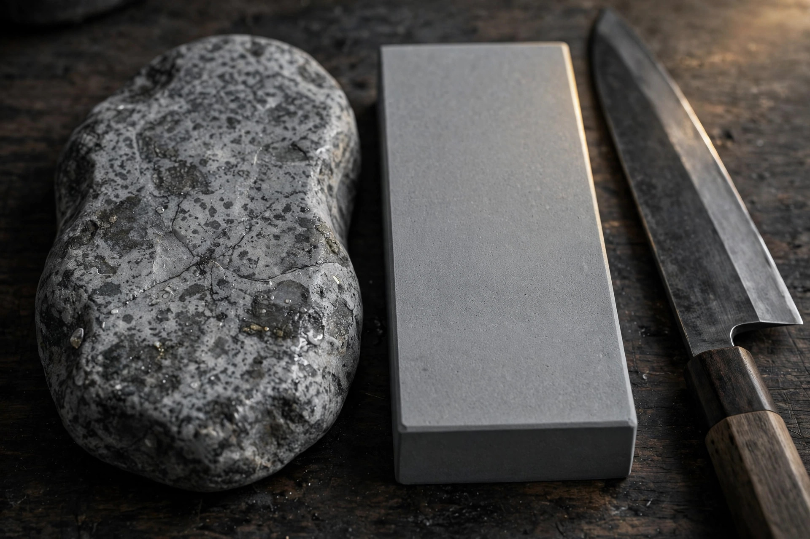

天然砥石と人造砥石の違い ― 目的別にどちらを選ぶべきか

結論
天然砥石と人造砥石は、どちらが上という関係ではありません。均一さと速さなら人造砥石、仕上げの質感と個性なら天然砥石が得意で、実務では「人造で中研ぎ、天然で仕上げ」と併用するのが最も合理的というのが目安です。目的に合わせて選んでください。
天然砥石と人造砥石の違いを比べる
人造砥石は砥粒を均一に混ぜて焼き固めた工業製品で、番手（粒度）の表示がそのまま研ぎの目安になります。一方、天然砥石は山の地層から切り出された石そのもので、一枚ごとに硬さも粒度の幅も異なります。この成り立ちの違いが、研ぎ味のすべてに影響します。
| 項目 | 人造砥石 | 天然砥石 |
|---|---|---|
| 均一性 | 高い。番手どおりの仕上がりが安定して得られる | 低い。個体差が大きく、同じ産地でも一枚ごとに違う |
| 価格の目安 | 数千円程度から購入できるものが多い | 数万円程度からが中心で、上位は数十万円を超えることもある |
| 研ぎの速さ | 一般に速く、形を整える工程に向く | 石によるが、仕上げ砥は比較的ゆっくり研ぐ傾向がある |
| 研ぎ上がり | 均一で再現性が高い。刃先がシャープに整いやすい | 粒度に幅があるため、地肌に深みや霞の表情が出やすいとされる |
| 入手と管理 | いつでも同じものが買え、扱いも比較的容易 | 採掘量に限りがあり、面直しや保管にも手間がかかる |
表のとおり、人造砥石の強みは「誰が研いでも、だいたい同じ結果になる」再現性です。天然砥石の強みは、その逆にある個体ごとの個性と、仕上げの質感にあります。
目的別にどちらを選ぶべきか
刃物の種類で考える
- 家庭用の包丁（ステンレス・三徳など）：人造砥石の中砥＋仕上げ砥で十分というのが目安です。手入れのしやすさも含めて扱いやすい構成です。
- 和包丁・柳刃など単刃の刃物：霞仕上げの地肌や刃先の質感にこだわるなら、最終仕上げに天然砥石を使う価値があります。
- カミソリ・鑿（のみ）・鉋（かんな）：刃先の細かさが結果を左右するため、硬質な天然仕上げ砥が好まれる分野です。ただし技量も求められます。
- 欠け直し・形の修正：研磨速度が必要な工程なので、荒い番手の人造砥石が現実的です。
研ぎ上がりの質感で考える
均一な鏡面に近い仕上がりを求めるなら人造砥石の細番手が確実です。対して、鋼と地金の境目をぼかす霞仕上げや、刃先にわずかな丸みを持たせた粘りのある切れ味を求める場合は、天然砥石のほうが狙いやすいとされます。どちらが正解かではなく、目指す質感で選ぶのが目安です。
併用が実は合理的 ― 人造で中研ぎ、天然で仕上げ
現場の職人や研ぎに慣れた方の多くは、実は両方を使い分けています。欠け直しから中研ぎまでは速くて均一な人造砥石で進め、最後の仕上げだけを天然砥石に替える。この併用なら、天然砥石は仕上げ専用の1枚で済み、コストも時間も抑えられます。天然砥石への入り口としても、まず仕上げ砥を1枚持つ形が無理のない目安です。逆に、天然砥石だけで全工程をまかなうのは、石の消耗と時間を考えると現実的とは言いにくいでしょう。
大切なのは「天然＝高級、人造＝入門」という序列で考えないことです。工程ごとに適した道具を選ぶ。その発想が、結局は一番よい研ぎ上がりにつながります。
自分に合う天然仕上げ砥を探したい方へ
- 砥石データベースで、産地・層・硬度・価格帯から石を横断検索できます。
- 鑑定済み砥石のご案内では、実際に研いでテストした石だけを取り扱う考え方を紹介しています。
- どの石が合うか迷ったら、お問い合わせから刃物の種類と用途をお知らせください。
よくある質問
- 初心者は天然砥石と人造砥石のどちらから始めるべきですか？
- まずは人造砥石の中砥（#1000前後が目安）から始めるのがおすすめです。均一で研ぎやすく価格も手頃なため、角度や力加減といった基本を身につけやすいためです。仕上げにこだわりたくなった段階で、天然の仕上げ砥を1枚足す形が無理のない目安です。
- 天然砥石は人造砥石より切れる刃になりますか？
- 一概には言えません。天然砥石は粒度が幅を持って分布するとされ、刃先の質感や地肌の表情に違いが出やすい一方、結果は石ごとの個体差と研ぎ手の技量に大きく左右されます。人造砥石でも正しい手順で研げば十分に鋭い刃が得られます。
- 人造砥石で中研ぎして天然砥石で仕上げる併用は問題ありませんか？
- 問題はなく、むしろ合理的な方法です。形を整える工程は速くて均一な人造砥石が担い、最後の刃先の質感だけを天然砥石で整えることで、時間とコストを抑えながら天然ならではの仕上がりを活かせます。
- 天然砥石の価格はどのくらいが目安ですか？
- 産地・層・大きさ・状態によって幅が大きく、一概には言えませんが、小型の仕上げ砥でも数万円程度から、良質な大型のものでは数十万円を超えることもあるのが目安です。価格だけで判断せず、実際に研いだテスト記録があるかどうかを確認することをおすすめします。